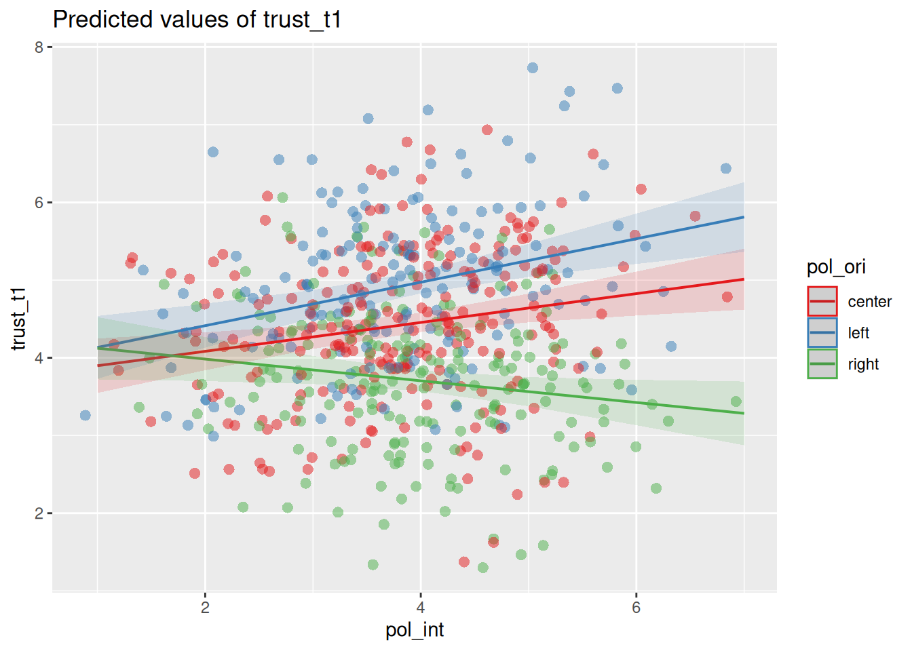

library(tidyverse)
library(sjPlot)
d <- read_csv("https://dev.dataliteracy.cc/practice_data.csv") |>
mutate(age = if_else(age > 100, 2024 - age, age)) |>
select(age, political_orientation, political_interest, trust_t1,
news_consumption = `news consumption`)
d5.5 Multiple Regression
Fitting OLS regression lines with multiple predictors, interpreting slopes, residuals, and R-squared.
You arrive here from Simple Regression, so you can already fit a line with a single predictor and read off its slope, p-value, and R². Here you’ll extend that same model to several predictors at once, to categorical predictors, and to interactions (moderation), and learn how to report the results. Real outcomes rarely have just one cause, so being able to separate the effects of several predictors in one model — and control for the relations between them — is the workhorse skill of communication research.
→ See this module in the skill tree
5.5.1 Setting up
In Simple Regression you fitted a regression with a single predictor. Here we extend this to multiple predictors. We use the same (simulated) practice data and the sjPlot package to create nice tables and plots of regression models.
We’ll cover:
- Multiple regression with two numeric independent variables, and how this allows you to control for the relations between the independent variables.
- A categorical independent variable in the model.
- Interaction effects, and how to use these to test moderation.
# the simple model from the Simple Regression module (used below to illustrate standardization)
m <- lm(trust_t1 ~ age, data = d)5.5.2 Multiple regression
In the previous example we used a single independent variable (age) to predict the dependent variable. Now we’ll add a second numeric independent variable (news_consumption) to the model. This is called multiple regression, and it allows us to test the effect of multiple variables on the dependent variable at the same time. The formula for using multiple independent variables is: dependent ~ independent1 + independent2 + ....
As we mentioned earlier, by including both variables in the model we can test the effect of news_consumption on trust while controlling for age, and vice versa. To better investigate the effects of controlling, it is good practise to show multiple versions of the model side by side, which we can do by passing multiple models to the tab_model() function. To better compare effect sizes, we also include the standardized coefficients, which we can do with show.std = T in the tab_model() function. To keep the table simple, we won’t show the confidence intervalls this time (show.ci = F).
TipStandardized coefficients
The standardized coefficients are the coefficients of the model if all variables are standardized. This means that the variables are transformed to have a mean of 0 and a standard deviation of 1. This makes the coefficients comparable, because they are now in terms of standard deviations.
Think for a second why this makes sense. If you have a variable that goes from 0 to 100, and another variable that goes from 0 to 1, then the coefficients of these variables will be on completely different scales. Recall that the coefficient tells us how much the dependent variable changes for every unit increase in the independent variable. A unit increase of 1 on a scale from 0 to 100 is very different from a unit increase of 1 on a scale from 0 to 1. And even if two variables are both on a scale from 0 to 1, the effect of a unit increase can still be different if the variables have a different standard deviation. By standardizing the variables, a unit increase is now an increase of one standard deviation, which is the same for all variables.
You can request the standardized coefficients with the show.std = T argument in the tab_model() function. This will report the standardized coefficients (std. Beta) next to the regular coefficients (Estimates).
Alternatively, you can also use the rockchalk package to standardize the entire model. This will give you a new model with standardized coefficients, which you can then use to interpret the effect sizes. Using show.std = T in the tab_model() function actually does the same thing behind the scenes, so in practice this is often easier. But when first learning about regression analysis, it can be helpful to perform this step yourself to better understand what’s going on.
library(rockchalk)
m_std <- standardize(m)
tab_model(m_std)m1 <- lm(trust_t1 ~ news_consumption, data = d)
m2 <- lm(trust_t1 ~ news_consumption + age, data = d)
tab_model(m1, m2, show.std = T, show.ci=F)| trust_t1 | trust_t1 | |||||
|---|---|---|---|---|---|---|
| Predictors | Estimates | std. Beta | p | Estimates | std. Beta | p |
| (Intercept) | 3.35 | 0.00 | <0.001 | 2.96 | 0.00 | <0.001 |
| news consumption | 0.07 | 0.23 | <0.001 | 0.03 | 0.09 | 0.040 |
| age | 0.02 | 0.29 | <0.001 | |||
| Observations | 600 | 595 | ||||
| R2 / R2 adjusted | 0.055 / 0.053 | 0.120 / 0.117 | ||||
If we look at the first model (on the left), we see a significant effect of news_consumption on trust_t1 (\(b = 0.07\), \(p < 0.001\)). However, when we include the age variable in the model, we see that the effect of news_consumption becomes much smaller (\(b = 0.03\), \(p < 0.05\)). This suggests that the effect of news_consumption on trust_t1 we saw in the first model is for a large part explained by age.
What we’re witnessing here is a form of confounding. There is a relation between the news_consumption and trust_t1 variables, but a part of this relation is spurious. age has an effect on both news_consumption and trust_t1: older people consume more news, and have more trust in journalists. By controlling for age, we can see the real effect of news_consumption on trust_t1 (though we can never be sure that we’ve controlled for all possible confounders). For a more detailed explanation of confounding, see the statistical control module.
Standardized coefficients
In the second model we now have two significant effects: age and news_consumption. So how can we tell which effect is stronger? If we look at the regular coefficients, we see that age (0.02) is quite similar to news_consumption (0.03). However, this is not a good way to compare the effects, because the variables are on different scales. A 1 unit increase in age is not the same as a 1 unit increase in news_consumption. By standardizing the variables, we can compare the effects in terms of standard deviations instead. For every standard deviation increase in age, trust_t1 increases by 0.29 standard deviations. For every standard deviation increase in news_consumption, trust_t1 increases by 0.09 standard deviations. So this suggests that the effect of age is stronger.1
Adjusted \(R^2\)
This is also a good time to talk about the \(R^2\) adjusted value. This is the \(R^2\) value, but corrected for the number of independent variables in the model. This is important, because the \(R^2\) value will always increase when you add more independent variables (i.e. more information) to the model. The \(R^2\) adjusted value corrects for this, which is why it’s slightly lower. So when you’re adding more independent variables to the model, you can use the \(R^2\) adjusted value to see if you’re not just adding noise.
5.5.3 Categorical IVs
The independent variable in a regression model can also be categorical. This allows us to include categorical variables in the model, similar to the t-test and ANOVA. Let’s see what this looks like when we predict trust_t1 based on the political_orientation variable, which has the values left, right and center.
We cannot directly use the values “left”, “right” and “center” in the regression equation, but we create so-called dummy variables. A dummy variable is a binary variable (i.e., it can only take the values 0 and 1) that represents whether something is the case or not. So if we want to test whether people that lean to the left have more trust in journalists, we can create a dummy variable that is 1 for people with orientation left, and 0 for all other people (i.e., right and center).
d = mutate(d, political_left = if_else(political_orientation == "left", 1, 0))
select(d, political_orientation, political_left) ## check the resultNow we can use this variable in the regression model.
m <- lm(trust_t1 ~ political_left, data = d)
tab_model(m)| trust_t1 | |||
|---|---|---|---|
| Predictors | Estimates | CI | p |
| (Intercept) | 4.10 | 4.00 – 4.19 | <0.001 |
| political left | 0.83 | 0.65 – 1.01 | <0.001 |
| Observations | 600 | ||
| R2 / R2 adjusted | 0.120 / 0.119 | ||
The interpretation of the results is almost identical to the previous example with the age variable. The only thing we need to keep in mind is that the political_left variable is binary, so it can only take the values 0 and 1. Accordingly, we don’t say that the trust in journalists increases by 0.83 points for every unit increase in political_left. Instead, we just say that people on the political left (political_left = 1) have on average a trust score that is 0.83 points higher than people that are not on the political left (political_left = 0).
Categories with more than two levels
In the previous example we created the dummy variable ourselves, but we can also let R do this for us. This is especially convenient if we have more than two categories. In addition, this also has the benefit that lm knows that the variable is categorical, which enables us (among other things) to visualize the model propertly.
We first need to make sure that our variable is of the factor type2. The difference between a character and a factor is that in a factor we explicitly tell R what the categories are, and what the order of the categories is. The order is important, because the first category will be the reference category (more on this later) in the regression model. To transform our political_orientation variable to a factor we can use the factor() function, and provide the levels argument to specify the order of the categories.
d <- mutate(d, political_orientation = factor(political_orientation, levels=c('center','left','right')))Now, when we use the political_orientation variable in the regression model, R will automatically create the dummy variables for us.
m <- lm(trust_t1 ~ political_orientation, data = d)
tab_model(m)| trust_t1 | |||
|---|---|---|---|
| Predictors | Estimates | CI | p |
| (Intercept) | 4.42 | 4.30 – 4.54 | <0.001 |
| political orientation [left] |
0.50 | 0.31 – 0.69 | <0.001 |
| political orientation [right] |
-0.71 | -0.89 – -0.53 | <0.001 |
| Observations | 600 | ||
| R2 / R2 adjusted | 0.198 / 0.196 | ||
Notice that there are now two coefficients for the political_orientation variable: one for left and one for right. Why 2, and not 3? This is because we only need two dummy variables to represent three categories. You can see how this works in the following table:
| political_orientation | is_left | is_right |
|---|---|---|
| left | 1 | 0 |
| right | 0 | 1 |
| center | 0 | 0 |
The center category is now the reference category. Recall that the intercept is the predicted value of the dependent variable when the independent variables are zero. In this model, the intercept therefore represents the predicted value of trust_t1 for people in the center category.
The effects of the left and right categories only tell us how much the trust in journalists changes for people in these categories compared to people in the reference category. So the political_orientation [left] coefficient tells us that trust is for people in the left category is 0.5 points higher than for people in the center category. The political_orientation [right] coefficient tells us that trust is for people in the right category is -0.71 points lower than for people in the center category. Based on this model, we cannot directly compare the left and right categories, because the center category is the reference category.
NoteDetermining what reference category to use
Depending on your hypotheses, you might want to use a specific category as the reference category. You can do this by changing the order of the levels in the factor() function. The first level will always be the reference category. So in the following example, the left category is the reference category.
d2 <- mutate(d, political_orientation = factor(political_orientation, levels=c('left','center','right')))
lm(trust_t1 ~ political_orientation, data = d2) |>
tab_model()| trust_t1 | |||
|---|---|---|---|
| Predictors | Estimates | CI | p |
| (Intercept) | 4.92 | 4.78 – 5.07 | <0.001 |
| political orientation [center] |
-0.50 | -0.69 – -0.31 | <0.001 |
| political orientation [right] |
-1.21 | -1.41 – -1.02 | <0.001 |
| Observations | 600 | ||
| R2 / R2 adjusted | 0.198 / 0.196 | ||
5.5.4 Interaction effects
One of the strengths of regression analysis is that it allows you to test interaction effects. This is when the effect of one independent variable depends on the value of another independent variable.
For example, in the previous model we saw that political_orientation has an effect on trust_t1. But we might theorize that this effect depends on a person’s overall political_interest. If people are not really interested in politics, then their political orientation might not have a big effect on their trust in journalists. In other words, we expect that political_interest moderates the effect of political_orientation on trust_t1.
To test this, we can include an interaction term in the regression model. That is, we add an extra term to the formula in which we multiply the two independent variables. Here we fit two models: one without the interaction term, and one with the interaction term. To keep the table readable, we’ll first rename the variables to shorter names.
ds <- rename(d, pol_ori = political_orientation,
pol_int = political_interest)
m1 <- lm(trust_t1 ~ pol_ori + pol_int, data = ds)
m2 <- lm(trust_t1 ~ pol_ori + pol_int + pol_ori*pol_int, data = ds)
tab_model(m1, m2, show.std=T, show.ci=F)| trust_t1 | trust_t1 | ||||||
|---|---|---|---|---|---|---|---|
| Predictors | Estimates | std. Beta | p | Estimates | std. Beta | p | std. p |
| (Intercept) | 4.01 | 0.09 | <0.001 | 3.71 | 0.09 | <0.001 | 0.108 |
| pol ori [left] | 0.50 | 0.47 | <0.001 | 0.14 | 0.47 | 0.692 | <0.001 |
| pol ori [right] | -0.73 | -0.68 | <0.001 | 0.55 | -0.66 | 0.122 | <0.001 |
| pol int | 0.11 | 0.11 | 0.004 | 0.19 | 0.18 | 0.002 | 0.002 |
| pol ori [left] × pol int | 0.09 | 0.09 | 0.299 | 0.299 | |||
| pol ori [right] × pol int | -0.33 | -0.32 | <0.001 | <0.001 | |||
| Observations | 600 | 600 | |||||
| R2 / R2 adjusted | 0.209 / 0.205 | 0.238 / 0.232 | |||||
In the first model we see roughly the same effects as before for political_orientation. We also see that political_interest has a significant effect on trust_t1 (\(b = 0.11\), \(p < 0.01\)).
In the second model we added the interaction terms. One important thing to note is that this changes the interpretation of the main effects. When you add an interaction term, the main effects of the variables are now the effect of the variable when the other variable is zero. This doesn’t always make sense. For instance, the effect of pol ori [left] now tells us the effect of political_orientation when political_interest is zero, but this is impossible because political_interest is measured on a scale from 1 to 7. Often, we therefore don’t report the main effects when we have an interaction term. We’ll also skip this for now (but see the optional block if you’re interested)
NoteInterpreting main effects with interaction terms
When you add an interaction term, the main effects of the variables used in this term are now the effect of the variable when the other variable is zero. As we mentioned, sometimes this doesn’t make sense. However, we can make it make sense, if we rescale the variables so that the value zero is meaningful. We could for instance center the variables. This way, zero is the mean of the variable, and the main effects are the effect of the variable at the mean of the other variable.
This is also why in the model we see very different results for the unstandardized and standardized coefficients. Standardized coefficients are centered, so they are the effect of the variable at the mean of the other variable. This is also why we now get an additional std. p column, which gives us the p-value of the standardized coefficients. In our model, the unstandardized coefficients are not significant, but the standardized coefficients are. Let’s separately interpret the unstandardized and standardized coefficients for the political_orientation effects.
- Unstandardized coefficients:
pol_ori [left]: The effect ofpolitical_orientationontrust_t1whenpolitical_interestis zero is not significant.pol_ori [right]: The effect ofpolitical_orientationontrust_t1whenpolitical_interestis zero is not significant.
These effects should not be interpreted, because political_interest is a scale from 1 to 7, so a value of zero is not meaningful. It just happens to be the case that as you extrapolate to a political_interest of zero (i.e. go to the left on the plot below) there is no expected difference in trust_t1 between people with different political_orientation.
- Standardized coefficients:
pol_ori [left]: The effect ofpolitical_orientationontrust_t1at the mean ofpolitical_interestis significant.pol_ori [right]: The effect ofpolitical_orientationontrust_t1at the mean ofpolitical_interestis not significant.
These coefficients do have a meaningful interpretation. Based on our analysis we can see that for people with low political_interest, there is no significant effect of political_orientation on trust_t1. If you look at the plot below, you see that the lines overlap at the left. As political_interest increases (towards the right), the lines start diverging, indicating that the effect becomes significant at some point. The main effect simply tells us that for the average value of political_interest, the effect is already significant.
Our main interest is in the interaction terms. The pol ori [left] x pol int coefficient tells us how much the effect of political_orientation on trust_t1 changes for every unit increase in political_interest. This is positive, which means that the effect of political_orientation on trust_t1 becomes stronger as political_interest increases. We see the opposite effect for the pol ori [right] x pol int coefficient, which is negative.
This is notoriously difficult to interpret, so a good technique for interpreting interaction effects is to plot the interaction. The sjPlot package has the plot_model() function, which can plot the predicted values (type = "pred") for a selection of terms (terms = c('pol_int','pol_ori')). This will show you how the effect of political_orientation on trust_t1 changes as political_interest increases.
plot_model(m2, type='pred', terms = c('pol_int','pol_ori'),
show.data = T, jitter = T)
On the left side of the plot, where political interest is low, we see that there is not yet a significant effect of political orientation on trust in journalists. This makes sense: if you’re not interested in politics, then your political orientation might not matter that much. However, as political interest increases, we see that the line diverge, indicating an increasingly large effect of political orientation. We can thus conclude that the effect of political orientation on trust in journalists is moderated by (i.e. depends on) political interest.
5.5.5 How to report
For APA style reporting of regression analysis, we generally report two things:
- The coefficients that we’re interested in
- The model fit
Reporting the coefficients
- The coefficients of the model, which tell us the effect of the independent variables on the dependent variable.
- The model fit, which tells us how well the model fits the data.
Footnotes
Note that we have not tested if the difference between the two coefficients is significant. We will not go into this here, but note that the confidence intervalls of the standardized coefficients can provide more confidence in this comparison.↩︎
You can also use a
charactervariable directly, but thefactortype is more appropriate for categorical variables. It also let’s you specify the order of the categories, which is important for regression analysis because it let’s you specify the reference category.↩︎